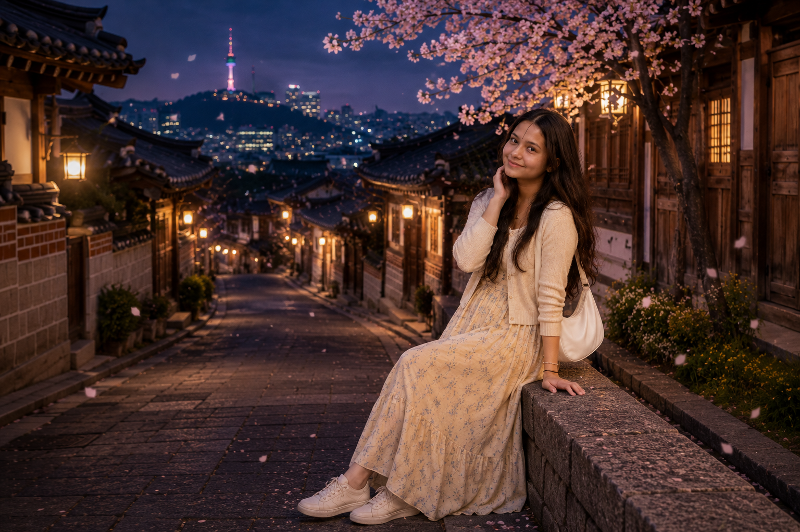

A little K-drama moment.
If this were a K-drama,
this would be one of those scenes
I'd want to watch again and again.
Some moments deserve to be replayed. ♡
EPISODE 07 · A LITTLE LETTER
I hope this new year of your life gives you many more reasons to smile — the simple ones, the unexpected ones, and the ones you'll remember for a long time.
Keep loving the little things that make you happy — beautiful flowers, stories that stay with you, and those K-dramas that somehow make ordinary moments feel special.
And that dream of seeing Seoul someday... I hope you get to experience it exactly the way you've imagined it — spring blossoms, beautiful streets, little cafés, and maybe even a moment that feels straight out of your favourite K-drama.
Until then, keep dreaming, keep smiling, and keep collecting little moments that make life beautiful.
Here's to your next chapter,
and all the beautiful things waiting for you. ♡
FINAL EPISODE
And maybe...
Seoul will be waiting for you.
A little story, made especially for you. ♡